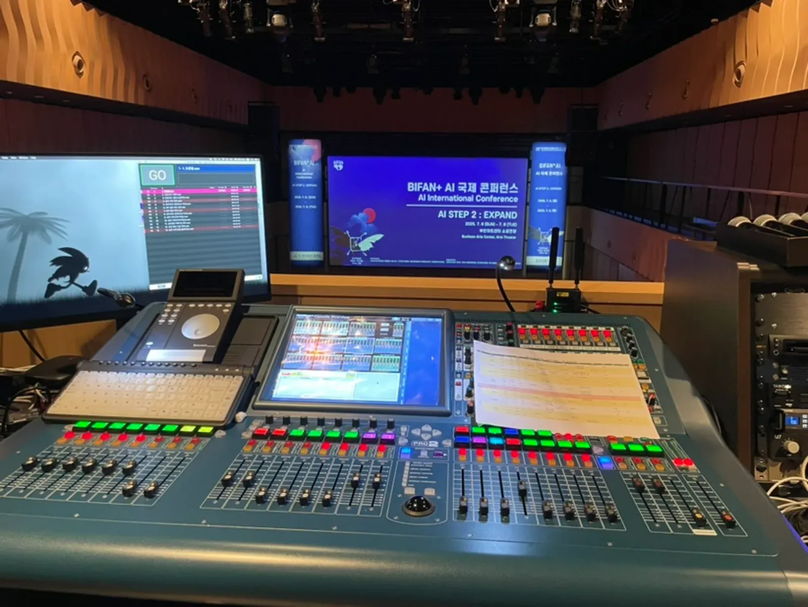
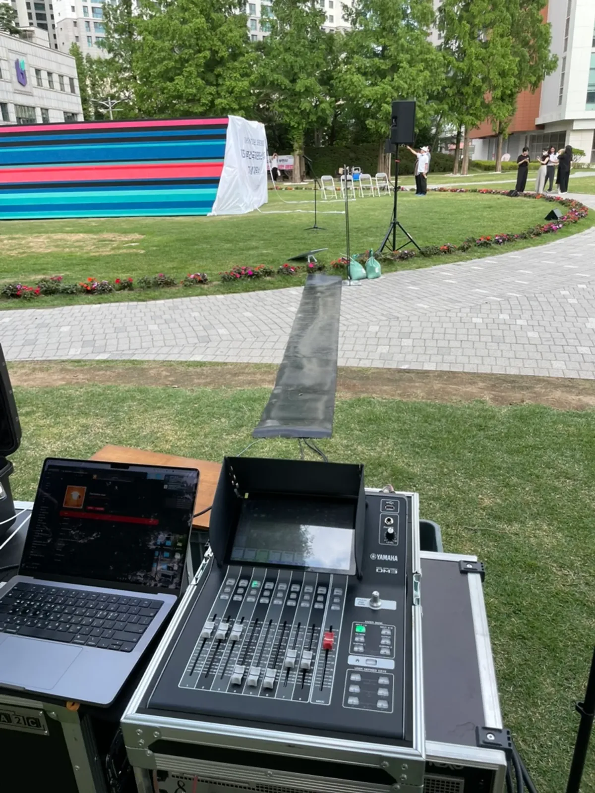
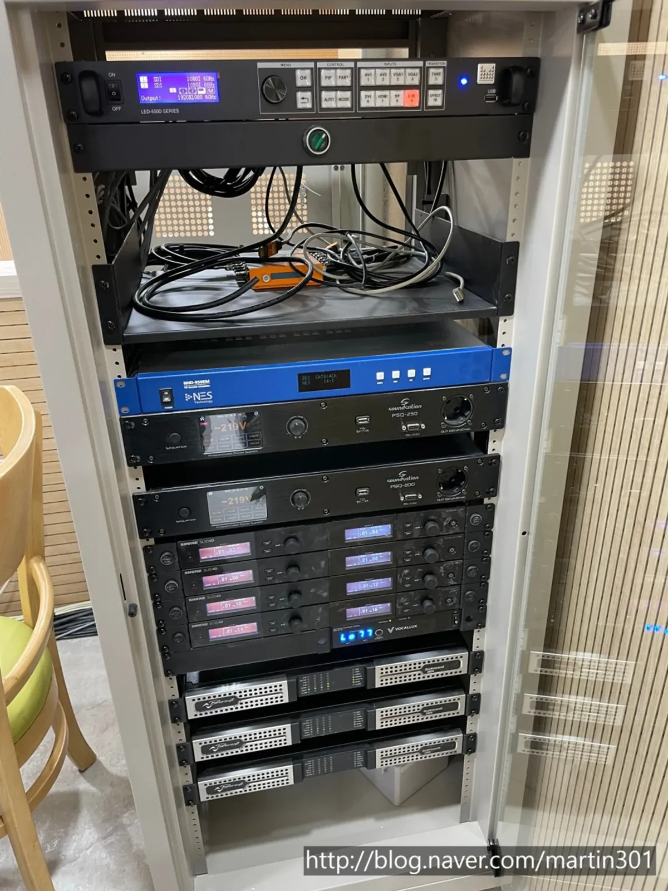

남양주 무선마이크 대여는 「몇 개가 동시에 켜져 있어야 하는가」를 먼저 세면 절반은 끝납니다. 그다음이 혼선 · 끊김 점검과 배터리 관리입니다. 행사 당일 마이크 문제는 리허설 때 모든 마이크를 한꺼번에 켜 보지 않아서 생기는 일이 잦습니다. 제이식스미디어 사무실이 있는 남양주에서 무선마이크를 준비할 때 순서대로 확인할 것을 정리했습니다.

- 마이크 개수는 「동시에 말하거나 노래하는 사람 수」에 여분 하나를 더해 셉니다.
- 설교 · 강연처럼 손이 자유로워야 하면 핀 마이크, 여러 사람이 돌려 쓰면 핸드 마이크가 편합니다.
- 리허설 때 쓸 마이크를 전부 한꺼번에 켜고 무대 구석구석을 걸어 보며 끊기거나 섞이는 소리가 없는지 확인합니다.
- 배터리는 행사 직전 새것으로 갈고, 여분을 무대 뒤에 따로 둡니다.
1. 남양주 무선마이크 대여, 개수부터 셉니다
무선마이크를 빌릴 때 가장 먼저 정할 것이 개수입니다. 참석 인원이 아니라 「같은 순서에 동시에 켜져 있어야 하는 마이크 수」를 세야 합니다. 사회자 한 명, 강사 한 명, 질의응답용 한 개처럼 순서표를 보며 세고, 고장이나 배터리 문제에 대비해 여분 하나를 더합니다.
| 순서 | 마이크를 쓰는 사람 | 추천 형태 |
|---|---|---|
| 사회 · 광고 | 사회자 | 핸드 |
| 설교 · 강연 | 설교자 · 강사 | 핀(손이 자유롭고 움직임이 많을 때) 또는 핸드 |
| 찬양 · 공연 | 인도자 · 보컬 | 핸드 |
| 질의응답 · 간증 | 객석의 여러 사람 | 핸드(돌려 쓰기) |
| 대담 · 패널 | 패널마다 한 개씩 | 핸드 또는 핀 |
제이식스미디어 자동 견적서의 「무선 마이크 추가」는 핸드 · 핀 마이크를 개수 단위로 고르는 항목입니다. 순서표를 함께 보내 주시면 필요한 수를 같이 맞춰 봅니다.
2. 핀 마이크와 핸드 마이크, 이렇게 고릅니다
핀 마이크는 옷깃에 달아 두 손이 자유롭습니다. 설교나 강연처럼 한 사람이 오래 말하고, 화면을 넘기거나 손짓을 많이 할 때 편합니다. 다만 입과의 거리가 정해져 있어 목소리가 작은 분은 소리를 크게 올려야 하고, 그만큼 스피커 소리가 다시 마이크로 들어가는 하울링에 약합니다.
핸드 마이크는 입 가까이 대고 말해 또렷하고 하울링에도 강합니다. 여러 사람이 돌려 쓰기도 쉽습니다. 대신 한 손을 계속 써야 하고, 마이크를 입에서 멀리 내리면 소리가 갑자기 작아집니다. 처음 마이크를 잡는 분께는 「주먹 하나 거리」를 미리 알려 드리면 좋습니다.
3. 혼선 · 끊김은 리허설에서 잡습니다
무선마이크는 전파로 소리를 보내기 때문에 같은 건물에서 쓰는 다른 무선 장비와 섞이거나, 수신기와 거리가 멀어지면 끊길 수 있습니다. 그래서 장비를 세팅할 때 마이크마다 겹치지 않게 채널을 맞추고, 리허설에서 실제 조건으로 확인하는 것이 가장 확실합니다.
- 행사에서 쓸 마이크를 전부 한꺼번에 켭니다. 하나씩 켜 보면 섞이는 문제를 놓칩니다.
- 마이크를 든 사람이 무대 끝, 객석 통로, 무대 뒤까지 걸어 보며 끊기는 자리가 없는지 듣습니다.
- 같은 건물에서 다른 행사가 무선 장비를 쓰는지 장소 담당자에게 물어봅니다.
- 수신기(받는 장치)는 금속 랙 깊숙이 넣지 말고, 안테나가 무대 쪽을 보게 둡니다.
- 문제가 생기면 바로 바꿔 줄 여분 마이크를 무대 옆에 켜 둔 상태로 대기시킵니다.

4. 배터리와 하울링, 당일 아침에 다시 봅니다
순서 중간에 마이크가 꺼지는 흔한 이유 하나가 배터리입니다. 리허설 때 멀쩡하던 마이크가 본 순서 중간에 꺼지는 일을 막으려면 행사 직전에 새 배터리로 갈고, 여분 배터리를 무대 뒤 정해진 자리에 둡니다. 충전식이라면 전날 밤에 모두 충전해 두었는지 확인합니다.
- 본 순서 직전 새 배터리로 교체(또는 완충 확인)
- 여분 배터리는 무대 뒤 한곳에, 쓴 배터리와 섞이지 않게
- 마이크마다 이름표(사회 · 강사 · 찬양1 등)를 붙여 바뀌지 않게
- 스피커 바로 앞에서 마이크를 켜지 않기 — 하울링이 가장 잘 나는 자리
- 마이크를 쓰지 않는 순서에는 음향 자리에서 꺼 두기(무대에서 스위치를 만지지 않게)

하울링은 스피커 소리가 다시 마이크로 들어가 커지는 현상입니다. 스피커를 무대보다 앞쪽에 두고, 마이크를 든 사람이 스피커 앞으로 걸어 나가지 않도록 동선을 미리 알려 두면 많이 줄일 수 있습니다.
5. 남양주 무선마이크 견적 문의 전에 정리할 것
제이식스미디어 사무실은 경기도 남양주시 순화궁로 282 에이스하이엔드타워별내 319호에 있고, 영업시간은 월~토 09:00~18:00입니다. 방문 상담은 미리 연락 주시고 오시면 됩니다. 마이크만 필요한 경우에도 문의 폼에서 「장비만 렌탈」을 골라 필요한 장비를 적어 주시면, 행사 규모와 현장 여건을 확인한 뒤 가능 여부와 구성을 안내합니다.
| 자동 견적서 항목 | 언제 고르나 |
|---|---|
| 무선 마이크 추가 | 핸드 · 핀 마이크가 더 필요할 때(개수 단위) |
| 음향 (소형) | 세미나 · 강연 · 소규모 예배에 스피커까지 필요할 때 |
| 디지털 믹서 | 여러 마이크를 한자리에서 조절해야 할 때 |
| 음향 엔지니어 | 리허설과 본 순서에서 마이크 운영을 맡길 때 |
자동 견적서에서 항목을 골라 보내 주시면 확인 후 안내합니다. 지역 안내는 남양주 음향 · 설치 안내, 수련회 음향 전체 준비는 남양주 교회 수련회 음향 글에 있습니다.
자주 묻는 질문
마이크만 빌릴 수도 있나요?
문의 폼에서 「장비만 렌탈」을 골라 필요한 장비를 적어 주세요. 행사 규모와 현장 여건을 확인한 뒤 가능 여부와 구성을 안내합니다.
마이크가 끊기면 어떻게 하나요?
리허설 때 모든 마이크를 한꺼번에 켜고 무대 곳곳을 걸어 보는 것이 가장 좋은 예방입니다. 당일에는 여분 마이크를 켜 둔 채 대기시켜 바로 바꿉니다.
핀 마이크와 핸드 마이크 중 무엇이 좋나요?
한 사람이 오래 말하고 손이 자유로워야 하면 핀, 여러 사람이 돌려 쓰거나 노래를 하면 핸드가 편합니다. 순서표를 보내 주시면 함께 정합니다.